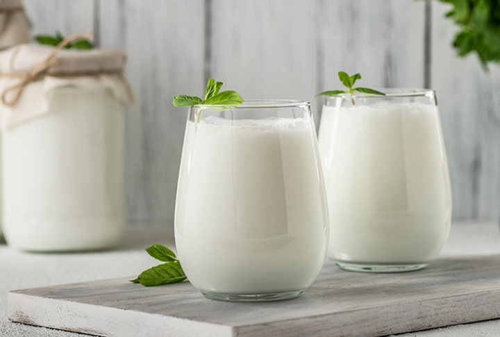

Yemek Tarifim
Ana Sayfa
Tarifler
Ayran Tarifi

Malzemeler
1 su bardağı yoğurt
1 su bardağı su
1 tatlı kaşığı tuz
Birkaç buz küpü (isteğe bağlı)
Yapılışı
Yoğurdu bir kaba alın.
Üzerine suyu ekleyin ve iyice çırpın.
Tuzu ekleyin ve karıştırın.
İsteğe bağlı olarak buz ekleyin ve karıştırarak soğuk servis yapın.
Afiyet Olsun!
Serinletici ve ferahlatıcı ayranınız hazır! Soğuk servis yaparak keyifle içebilirsiniz.